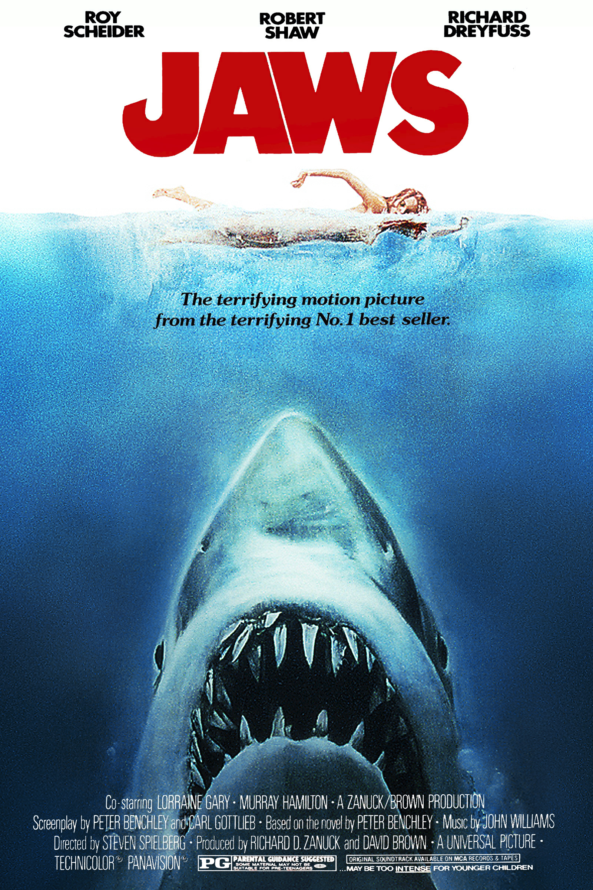

Top $10 Theater
 大白鯊（Jaws）—1975 《大白鯊》（英語：Jaws）是一部1975年的美國驚悚電影，由史蒂芬·史匹柏執導，根據彼得·本奇利的同名小說改編。 本片是暑期大片的開山之作，其發行被視為電影史上的分水嶺。影片講述一個名叫艾米蒂島的暑期度假小鎮近海出現一頭巨大的食人大白鯊， 多名遊客命喪其口，當地警長在一名海洋生物學家和一位職業鯊魚捕手的幫助下決心獵殺這條鯊魚。羅伊·沙伊德爾在片中出演馬丁·布羅迪警長， 理察·德萊弗斯飾演海洋生物學家馬特·胡珀，勞勃·肖扮演鯊魚捕手昆特，莫瑞·漢密爾頓（Murray Hamilton）詮釋艾米蒂島市長， 另有洛蘭·加里（Lorraine Gary）出演布羅迪的夫人艾倫。小說原著作者本奇利撰寫了劇本的初稿，之後演員兼編劇卡爾·哥特列布 在電影進行主體拍攝期間對其進行了改編。 影片主要是在麻薩諸塞州的馬薩葡萄園島取景，拍攝過程困難重重，預算超支、日程延誤。由於藝術製作部門製作的機械鯊魚出現了許多故障， 史匹柏決定充分利用作曲家約翰·威廉士創作的簡約、不詳的音樂主題來表明鯊魚即將出場，用音樂來表現這條可怕動物的存在。 史匹柏及他人都曾把這種暗示性手法與經典驚悚片導演亞佛烈德·希區考克相比。環球影業對本片的發行力度即使是按當年的大型製片公司電影來說也 異常之大，上映銀幕超過450張，並配以大量營銷宣傳活動和著重強調搭售商品的電視廣告。 《大白鯊》獲得了影評人的普遍好評，創下歷史電影票房新紀錄，這個紀錄要到兩年後才被《星際大戰》超越。 影片配樂和剪輯獲得了包括奧斯卡金像獎在內的多個獎項肯定，電影本身還經常登上多個組織評選的史上最佳電影榜單。《大白鯊》和《星際大戰》一樣， 在建立好萊塢現代商業模式上有著舉足輕重的地位，開創了把動作和冒險類電影在暑期通過數以千計的電影院放映，並伴隨著大量廣告的高概念營銷理念。 影片之後還拍攝了三部續集，並且出現了許多模仿之作，不過都沒有史匹柏和本奇利的參與。2001年，《大白鯊》因其因其在「文化、歷史和審美方面的顯著成就」， 獲美國國會圖書館列入國家電影登記表下屬的國家電影保存委員會保護電影名單。 通貨膨脹計算器（1975-2015，單位：美元）：